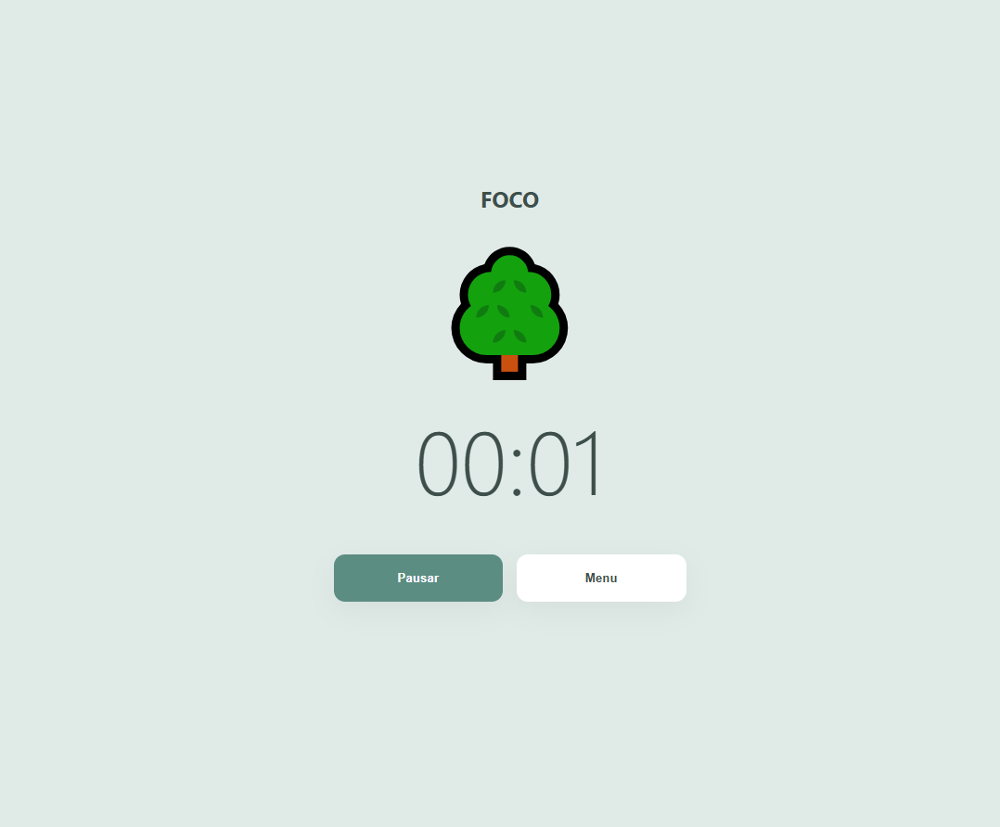
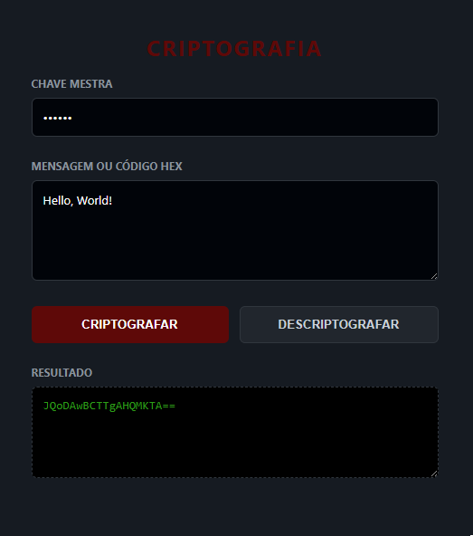
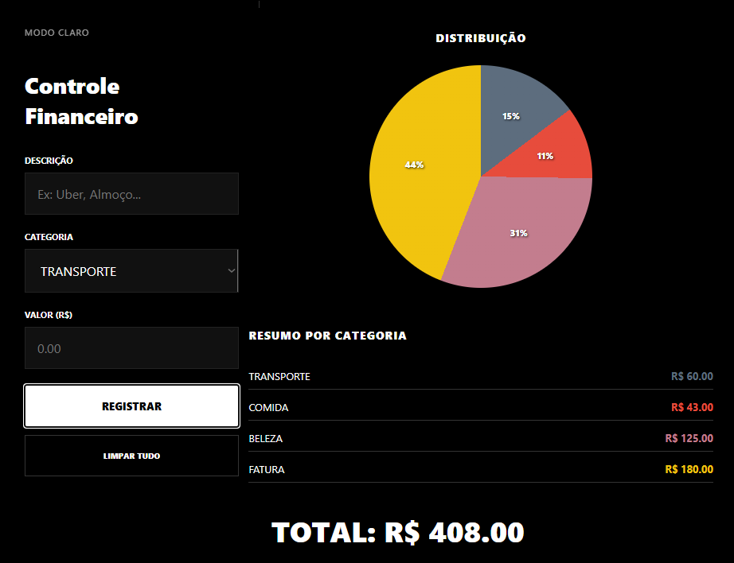

Sobre Mim
Estudante de Ciência da Computação com foco em manter a lógica e clareza em tudo que constrói.
Busco construir aplicações que equilibrem funcionalidade e performance, priorizando a organização técnica e o planejamento de requisitos em cada projeto.
Valorizo a busca por soluções diretas, focando na entrega de sistemas estáveis, bem documentados e claros.
Além da programação, no meu tempo livre, dedico-me a artes digitais, incluindo desenho e edição de imagem e vídeo, ferramentas que utilizo para explorar novas formas de expressão visual e complementar minhas habilidades de desenvolvimento de interfaces.
Abordagem Técnica
Meu foco está na construção de software com alta fidelidade aos requisitos e lógica consistente. Priorizo o controle direto sobre o código e a performance, evitando complexidades desnecessárias que não agreguem valor real à manutenção do sistema.
Fluxo de Trabalho
- Análise e Planejamento: Dedico tempo ao levantamento de requisitos funcionais e à modelagem da arquitetura antes da codificação.
- Desenvolvimento Nativo: Priorizo o uso de recursos padrão das linguagens para garantir projetos leves e independentes.
- Documentação e Estrutura: Mantenho um padrão rigoroso de documentação técnica para garantir sistemas claros e escaláveis.
- Resolução de Problemas: Aplico conceitos sólidos de algoritmos para resolver desafios técnicos de forma direta.
Formação
Graduação
Ciência da Computação
Uninter – 2025-Presente
Focado no desenvolvimento de soluções tecnológicas robustas, o curso de Ciência da Computação prioriza o domínio da lógica de programação e o estudo profundo de estruturas de dados para otimizar o processamento de informações.
Idiomas
- Português: Nativo
- Inglês: Fluente
- Espanhol: Intermediário
Habilidades
- Python
- HTML5
- CSS3
- JavaScript
Portfólio

Timer de Estudo Pomodoro
Ferramenta de produtividade baseada na técnica Pomodoro, buscando auxiliar no gerenciamento de tempo e foco. Possui uma interface minimalista com transições de estados para ciclos de estudo e descanso.
Ver Projeto
Software de Criptografia
Aplicação voltada para segurança de dados que permite cifrar e decifrar mensagens através de chaves mestras. Focado em garantir a integridade da informação com uma interface intuitiva e funcional.
Ver Projeto
Organizador Financeiro
Sistema de gestão de finanças pessoais com interface de alto contraste. Permite o registro de despesas por categoria, cálculo automático de totais e visualização de dados através de gráficos de distribuição.
Ver ProjetoContato
Sinta-se à vontade para entrar em contato!